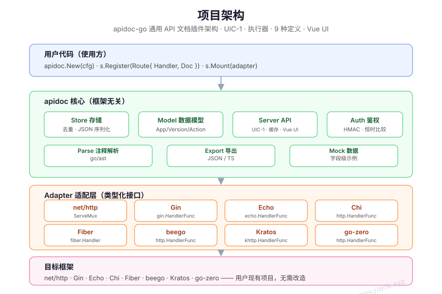
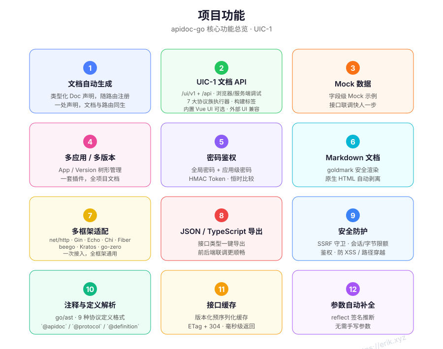
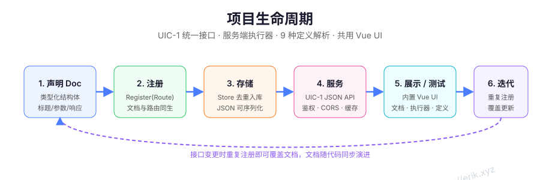

本页目录
Go 版把接口文档声明成类型化结构体，并和路由注册放在一起。文档与路由同生；库输出 menus/protocols/detail/export 文档 API，由 apidoc-ui 负责渲染、在线调试与协议面板。它适合已经使用 Go HTTP 框架、希望文档跟着路由走的项目。

适用场景
- net/http、Gin、Echo、Chi、Fiber、beego、Kratos、go-zero 服务端项目。
- 路由注册和文档声明希望放在同一处，避免文档与 handler 脱节。
- 需要外部 apidoc-ui 渲染文档、在线调试、协议注解、Mock、多应用/多版本、密码鉴权、响应缓存与 JSON/TypeScript 导出。
- 接受 Go 1.24+，并且能把文档注册写进现有路由初始化流程。
安装
go get github.com/erikwang2013/apidoc-go
最小示例（net/http）
package main
import (
"net/http"
"github.com/erikwang2013/apidoc-go"
"github.com/erikwang2013/apidoc-go/adapter"
)
func main() {
mux := http.NewServeMux()
s := apidoc.New(apidoc.Config{Title: "My API"})
if err := s.Register(apidoc.Route{
Method: "GET",
URL: "/hello",
Handler: http.HandlerFunc(func(w http.ResponseWriter, r *http.Request) {
w.Write([]byte("hello"))
}),
Doc: apidoc.Doc{
App: "demo",
Version: "v1",
Title: "Say hello",
Params: []apidoc.Param{
{Name: "name", In: "query", Type: "string", Required: true, Desc: "Your name"},
},
Responses: []apidoc.Response{
{Name: "message", Type: "string", Desc: "Greeting"},
},
},
}); err != nil {
panic(err)
}
if err := s.Mount(adapter.NewNetHTTP(mux)); err != nil {
panic(err)
}
http.ListenAndServe(":8080", mux)
}
文档 API 位于 http://localhost:8080/apidoc/api/...，由 apidoc-ui（或同契约的静态前端）读取。Mount 只挂载文档 API，不再内置 Web UI。
| 接口 | 说明 |
|---|---|
GET /apidoc/api/menus |
应用/版本/控制器/接口树。 |
GET /apidoc/api/protocols |
协议清单、别名、URL scheme 与默认端口。 |
GET /apidoc/api/detail |
接口详情；协议接口返回 protocol、protocol_info、method、url、参数、响应与 Mock。 |
GET /apidoc/api/export |
完整项目树；?format=typescript 导出类型定义。 |
任意协议注解
非 HTTP 接口复用 @method + @url，用 @protocol 指定协议（也可从 URL scheme 推断）：
// @apidoc
// @protocol mqtt
// @method PUBLISH
// @url mqtt://broker:1883/sensors/temp
// @title 发布温度
// @param qos int false "QoS" in=option default=1
// @param payload json true "消息体" in=payload
func PublishTemp() {}
@protocol 接受 HTTP/2、HTTP/3、SOAP、GraphQL、gRPC、Dubbo、Thrift、Hessian、WebSocket、SSE、MQTT、STOMP、Kafka、CoAP、Modbus TCP、DNP3、TCP、UDP 等协议及别名；完整清单见 GET /api/protocols。二进制 body 用 @param ... type=binary（或 hex/base64）+ in=payload 声明。
协议执行不进入 Go 库：库只输出协议元数据，由 apidoc-ui 渲染调试面板并发起测试请求；库不启动协议服务，也不提供 /api/debug/* 执行端点。需要服务端执行时使用 PHP 或 Rust 版。
核心模型与注册规则
| 类型 | 作用 |
|---|---|
apidoc.Server |
文档服务器实例，由 apidoc.New(Config) 创建。 |
apidoc.Route |
一条路由：Method、URL、框架原生 Handler、Doc。 |
apidoc.Doc |
文档声明：应用、版本、控制器、标题、描述、参数、响应、Markdown、排序。 |
apidoc.Param |
输入参数：Name、In、Type、Desc、Required、Default、Mock、Children。 |
apidoc.Response |
响应结构：Name、Type、Desc、Mock、Fields。 |
注册规则：
Register记录文档，并把 handler 转发给已挂载的框架适配器；尚未Mount时会先排队，Mount时重放。- 同一
(app, version, method, url)再次注册会替换文档，后注册的生效。 - 相同的
method + url不会重复注册到框架，避免路由冲突。 Method和URL是必填项；路由参数写法遵循所属框架的语法（例如 Gin 的:id或*path）。Register的返回值需要检查；适配器注册失败会在Mount/Register时返回错误。
Config
s := apidoc.New(apidoc.Config{
Prefix: "/apidoc",
Title: "My API",
Desc: "Internal API documentation",
GlobalParams: []apidoc.Param{
{Name: "Authorization", In: "header", Type: "string", Required: true, Desc: "Token"},
},
Auth: apidoc.AuthConfig{
Enable: true,
Password: "your-password",
Secret: "your-secret",
Expire: 24 * time.Hour,
Secure: true,
},
Apps: []apidoc.AppConfig{
{Key: "api", Title: "Public API"},
{Key: "admin", Title: "Admin API", Password: "admin-password"},
},
DebugOrigins: []string{"https://admin.example.com"},
})
| 配置 | 默认值 | 说明 |
|---|---|---|
Prefix |
/apidoc |
文档挂载路径。 |
Title |
API Docs |
文档标题。 |
Desc |
空 | 文档描述。 |
GlobalParams |
空 | 合并进每个接口的全局参数，按 (Name, In) 覆盖。 |
Auth |
关闭 | Enable、Password、Secret、Expire、Secure。 |
Apps |
空 | 应用配置：Key、Title、Password。 |
DebugOrigins |
空 | 允许跨域调试的来源白名单，默认不放行任何来源。 |
框架适配器
| 框架 | 构造器 |
|---|---|
| net/http | adapter.NewNetHTTP(mux) |
| Gin | adapter.NewGin(engine) |
| Echo | adapter.NewEcho(e) |
| Chi | adapter.NewChi(mux) |
| Fiber | adapter.NewFiber(app) |
| beego | adapter.NewBeego(app) |
| Kratos | adapter.NewKratos(srv) |
| go-zero | adapter.NewGoZero(srv) |
Gin 示例：
r := gin.Default()
s := apidoc.New(apidoc.Config{Title: "My API"})
s.Register(apidoc.Route{
Method: "GET",
URL: "/users/:id",
Handler: getUser,
Doc: apidoc.Doc{
Title: "Get user",
Params: []apidoc.Param{
{Name: "id", In: "path", Type: "int", Required: true, Desc: "User ID"},
},
Responses: []apidoc.Response{
{Name: "name", Type: "string", Desc: "User name"},
},
},
})
s.Mount(adapter.NewGin(r))
r.Run(":8080")
Echo、Chi、Fiber 只需替换适配器构造器，注册代码保持一致。beego 每个路径只保留一个 handler，同一 URL 的多个 method 需要按框架能力拆分；Kratos / go-zero 使用各自的 Server 类型。
写文档：Doc / Param / Response
s.Register(apidoc.Route{
Method: "POST",
URL: "/users",
Handler: createUser,
Doc: apidoc.Doc{
App: "api",
Version: "v1",
Controller: "User",
Title: "Create user",
Desc: "Create a user and return the profile",
Author: "erik",
Sort: 10,
Markdown: "Requires an admin token.",
Params: []apidoc.Param{
{Name: "name", In: "body", Type: "string", Required: true, Desc: "User name"},
{Name: "email", In: "body", Type: "string", Required: true, Desc: "Email"},
{Name: "roles", In: "body", Type: "array", Children: []apidoc.Param{
{Name: "id", Type: "int", Required: true},
}},
},
Responses: []apidoc.Response{
{Name: "id", Type: "int", Desc: "User ID"},
{Name: "name", Type: "string", Desc: "User name"},
},
},
})
Param.In 可选 header、query、body、path。Children 用于对象/数组字段；Response.Fields 用于响应里的嵌套字段。Markdown 会以 Markdown 渲染到详情页。
参数自动补全（reflect）
如果 Doc.Params 为空，Register 会用 reflect 从 handler 签名推断参数：结构体参数按 json tag 展开为 body 字段，框架 Context（如 *gin.Context、echo.Context、*fiber.Ctx）自动跳过。适合 handler 已经有强类型请求结构体的项目：
type CreateUserReq struct {
Name string `json:"name"`
Email string `json:"email"`
}
func CreateUser(c *gin.Context, req CreateUserReq) { /* ... */ }
自动补全只提供字段与类型，不替代手写描述；重要接口仍建议显式写 Doc.Params。
注释解析（go/ast）
在 handler 上方写 @apidoc 注释，用 parse.ParseDir 解析后注册：
// @apidoc
// @method POST
// @url /api/v1/users
// @title Create user
// @param name string true "User name"
// @success ok User "Success"
func CreateUser(c *gin.Context, req *CreateUserReq) { /* ... */ }
results, err := parse.ParseDir("./handlers")
if err != nil {
log.Fatal(err)
}
for _, r := range results {
s.Register(apidoc.Route{Method: r.Method, URL: r.URL, Handler: CreateUser, Doc: r.Doc})
}
支持的标签包括 @method、@url、@title、@desc、@author、@app、@version、@group、@sort、@param、@header、@body、@success / @response、@markdown、@protocol。@param 的参数格式是 name type required desc key=value...，in 可写 header、query、body、path。
Mock 与在线调试
- 接口详情页自动生成 Mock 示例；
Param.Mock/Response.Mock可以指定固定字符串。 - 未指定 Mock 时，mock 包按类型生成：
string、int、float、bool、object等。 - 在线调试由 apidoc-ui 从浏览器直连目标服务；跨域来源必须在
DebugOrigins中配置，适配器会下发 CORS 头。 - 协议接口只返回元数据，调试面板与测试请求由外部 UI 负责；Go 库没有服务端中继端点。
/api/menus、/api/protocols、/api/export的响应按文档版本预序列化缓存，Register/SetAppMeta后自动失效；响应带ETag与Cache-Control: private, max-age=300，重复访问可走 304。
鉴权
Config.Auth 开启后：
- 文档 UI 会显示登录面板；
POST /apidoc/api/login校验全局密码并写入 HttpOnly Cookie。 - 应用配置了独立
Password时，使用POST /apidoc/api/app-login换取应用级 token，应用密码优先于全局密码。 Secret参与签名；不要使用公开默认值，多实例部署要保证一致。Secure: true会在 HTTPS 下为 Cookie 加 Secure 标记。DebugOrigins只放行明确列出的来源；不要使用任意来源。
多应用与多版本
Doc.App / Doc.Version 决定接口归属；Config.Apps 提供应用标题与访问密码。UI 的应用树按配置展示，同一份文档可切换应用和版本。版本号不是路由规则的一部分，实际路由仍由 handler 注册决定。
导出
| 格式 | 地址 | 说明 |
|---|---|---|
| JSON | GET /apidoc/api/export |
完整项目树。 |
| TypeScript | GET /apidoc/api/export?format=typescript |
接口类型定义。 |
| 未知格式 | 任意其他 format |
返回 400。 |
导出与文档接口一样受鉴权保护。前端联调时可以直接下载 TypeScript，或把 JSON 交给测试工具。
典型场景
REST CRUD
为 list/detail/create/update/delete 分别注册 Route，用 Doc.Controller 归组，用 Param.In 区分 path/query/body。duplicate (app, version, method, url) 会以后注册为准，适合在初始化阶段覆盖默认文档。
分页
在多个接口重复的 page / pageSize 可以放进 GlobalParams，或在 handler 结构体里用 reflect 自动展开；显式 Doc.Params 更适合需要默认值与描述的接口。
登录与 Token
把 Authorization 放进 GlobalParams，所有接口自动带上；文档调试面板可以填写全局 Header。生产环境使用应用密码或全局密码保护文档本身。
文件上传
Param 的 Type 设为 file（文档模型允许字符串类型描述），并在 handler 中按框架方式处理 multipart。文档 UI 的调试面板支持文件选择。
多版本
用 Doc.Version 标记版本，Config.Apps 配置应用；不需要为每个版本复制一套文档服务。
注释驱动
已有大量 handler 时，用 parse.ParseDir 从注释生成文档，再把 parse.Result 转成 Route，避免在路由文件里重复写字段。
规则与排错
| 问题 | 检查 |
|---|---|
/apidoc/api/menus 404 |
是否调用了 Mount；Prefix 是否与访问路径一致；前端是否指向文档 API 而非旧内置 UI。 |
| 路由注册失败 | Method/URL 是否为空；适配器是否支持该路由写法；框架是否已启动。 |
| 接口没有显示 | Register 是否返回错误；Doc.App / Version 是否与 Config.Apps 匹配。 |
| 自动参数不对 | handler 结构体是否有 json tag；是否把框架 Context 放进了参数列表。 |
| 注释解析不到 | 是否带 @apidoc 标记；文件是否在 ParseDir 目录；标签格式是否正确。 |
| 调试跨域失败 | DebugOrigins 是否包含页面来源；服务端是否挂了适配器 CORS。 |
| 鉴权失败 | Cookie 是否被浏览器接受；密码、Secret、过期时间是否正确。 |
| 页面不更新 | 文档接口有 ETag 缓存；强制刷新或等待缓存过期。 |
可视概览


参考
- apidoc-go README
- apidoc-go Releases
- 架构与生命周期图见本页顶部与 README 的
docs/svg/。
安装
go get github.com/erikwang2013/apidoc-go其他语言指南
需要帮助？
到 GitHub Issues 提问，或先看仓库 README。